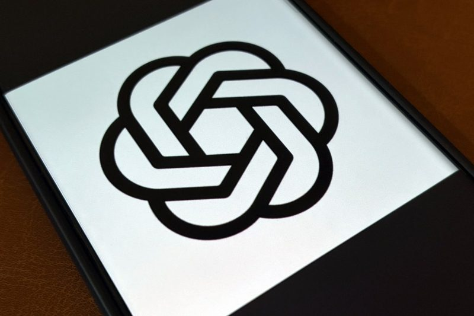
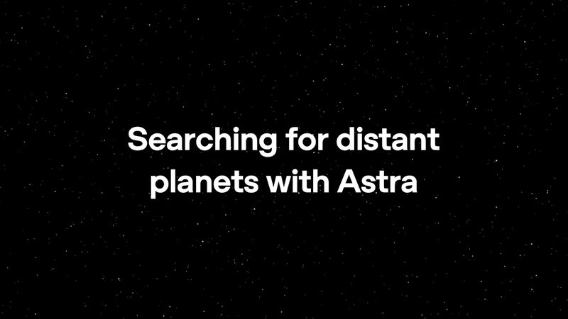

今日頭條
紐約州禁售 AI 聊天玩具五年 PLUS：ChatGPT 合併 Chat 與 Work，重度用戶額度可能更快用完
本期重點：紐約州州長簽署法案，未來五年禁售內建 AI 聊天機器人的玩具；OpenAI 開始合併 ChatGPT 的 Chat 與 Work，並坦言少數重度用戶額度可能更快用完。另有 Claude 小工具可裝成電腦 App、Amazon 與 Meta 傳協商讓 Muse 回到 Amazon 購物、美國 FCC 核准 SpaceX 百萬顆太空資料中心衛星、業餘天文迷用 AI 找到系外行星候選、Midjourney 動漫模型 Niji 8 上線，以及 Google 規定 AI 代理須透過 MCP 存取 Gmail 等資料。
📋 2026/11/26（四） 共 8 則 紐約州禁售 AI 聊天玩具五年 ChatGPT 合併 Chat 與 Work，重度用戶額度可能更快用完 Claude 做的小工具可裝成電腦 App Amazon 與 Meta 傳協商讓 Muse 回來購物 FCC 准 SpaceX 部署百萬顆太空資料中心衛星 業餘天文迷用 AI 找到系外行星候選 Midjourney 動漫模型 Niji 8 上線 Google 規定 AI 代理須透過 MCP 存取 Gmail 等資料 圖：紐約州州長辦公室 政策 #1 紐約州禁售 AI 聊天玩具五年 紐約州州長 Kathy Hochul 11 月 24 日簽署法案 S.9408A/A.11144B，未來五年禁止在紐約製造、經銷與販售內建 AI 聊天機器人的玩具，例如會連網跟孩子對話的絨毛娃娃、玩偶與機器人。法律在簽署 90 天後生效，違者每天每件最高罰 1.5 萬美元，由州檢察長執法。
💡 跟你有什麼關係： 年底送禮季，想買會聊天的 AI 玩具給孩子前，可先看它會收集哪些資料、能不能開放式對話、有沒有家長控制；台灣目前沒有類似禁令，選購要自己把關。
⚠️ 禁令要到簽署 90 天後才生效，這個購物季在紐約仍買得到；TechCrunch 指紐約是繼加州之後第二個禁售 AI 玩具的州。
📰 原始來源：紐約州州長辦公室（2026-11-24） ↗ 
圖：TechCrunch／Jagmeet Singh 新聞 #2 ChatGPT 合併 Chat 與 Work，重度用戶額度可能更快用完 OpenAI 11 月 24 日開始向少數 Pro 用戶推出合併 Chat 與 Work 的新版 ChatGPT。OpenAI 發言人 11 月 25 日告訴 TechCrunch，兩者改為共用同一個用量額度，多數人不會更常遇到重置，但少數最重度的用戶可能更快用完；Instant 模型的對話不限量，也不計入額度。官方說明頁寫明，12 月起 Plus、Pro、Business 方案的 ChatGPT 與 Codex 將共用以 tokens 計算的額度。
💡 跟你有什麼關係： 付費使用 ChatGPT 的人，之後可在「設定」的「用量」頁看剩餘額度與重置時間；常用進階模型或跑大量任務的人，要留意額度消耗可能變快，用完後仍可改用 Instant。
⚠️ 合併計畫 11 月初已以電子郵件公告，本則為 11 月 24 日開始推出與官方回應的新進展；來源為 TechCrunch 二手報導，額度細節以 OpenAI 說明頁為準。
📰 原始來源：TechCrunch（2026-11-25） ↗ 圖：Anthropic 新上線 #3 Claude 做的小工具可裝成電腦 App Anthropic 11 月 24 日推出「Install as app」測試版，Mac 與 Windows 版 Claude 可把 Claude 做出的 artifact 小工具安裝成獨立 App，有自己的圖示和視窗，能使用 Claude 與已連接的服務，經同意後還能發通知、加選單列圖示。權限分三級，最高的「完整電腦存取」可執行程式、讀寫或刪除檔案，每次更新都要重新同意。
💡 跟你有什麼關係： 例如請 Claude 做一個番茄鐘或每小時提醒伸展的小工具，就能像一般軟體一樣從開始選單或 Dock 開啟，不必每次回到聊天視窗找。
⚠️ Anthropic 表示不會事先審查這些 App，只建議對信任的 App 開放完整存取；開啟時需連網並登入 Claude，App 呼叫 Claude 會計入方案用量。Team 方案預設開啟但完整存取關閉，Enterprise 需管理員開啟。
📰 原始來源：Anthropic（2026-11-24） ↗ 圖：Fortune／Bloomberg／Getty Images 新聞 #4 Amazon 與 Meta 傳協商讓 Muse 回來購物 《Fortune》11 月 25 日獨家報導，Amazon 與 Meta 已多次協商，可能讓 Meta 的 AI 代理 Muse 重新連上 Amazon 商店；Amazon 在 9 月以違反使用者協議為由封鎖 Muse。消息人士說，搜尋結果怎麼排、廣告收入怎麼處理是主要爭點，Amazon 廣告業務一年約 686 億美元。
💡 跟你有什麼關係： 黑色星期五購物季前，AI 代理能不能替你在大型電商下單，取決於平台之間談不談得攏；用 AI 比價購物的人，可能會發現某些商店仍無法直接結帳。
⚠️ 雙方都不予置評，報導指談判仍在變動，是否及何時達成協議不明；屬媒體獨家二手報導，官方未證實。
📰 原始來源：Fortune（2026-11-25） ↗ 圖：The Verge／Getty Images 新聞 #5 FCC 准 SpaceX 部署百萬顆太空資料中心衛星 美國聯邦通訊委員會（FCC）11 月 25 日核准 SpaceX 的「Starmind」計畫，最多可部署 100 萬顆在軌道上做運算的衛星，當作太空中的 AI 資料中心，FCC 稱這是美國首次核准這類星系。依核准文件，SpaceX 須在 2033 年 11 月 25 日前部署第一顆，2035 年前達 10%，2038 年前達一半，2040 年前全部完成。
💡 跟你有什麼關係： AI 運算耗電又占地，業者想把資料中心搬到太空用太陽能供電；但衛星數量暴增也可能影響夜空觀測與太空垃圾風險。
⚠️ 核准是上限，不代表一定全部發射；Amazon、Viasat 與美國天文學會曾請求駁回，CNBC 報導 FCC 表示環境與光學天文疑慮不在其管轄範圍。
📰 原始來源：FCC（2026-11-25） ↗ 
圖：OpenAI 研究 #6 業餘天文迷用 AI 找到系外行星候選 OpenAI 11 月 24 日介紹兩位業餘天文愛好者的成果：OpenAI 工程師 Kevin Bond 用 Codex 搜尋克卜勒望遠鏡約 10 萬顆恆星的資料，找出 200 多個訊號，其中 10 個來自已知行星，SETI 研究所天文學家獨立找到其中兩個相同訊號；新創創辦人 Ethan Byrd 用 Astra 分析約 1,900 萬顆恆星的資料，初步找出 49 個候選，已送一個給 NASA TESS 團隊進一步分析。
💡 跟你有什麼關係： 公開的望遠鏡資料人人可下載，有 AI 幫忙寫程式，一般人也能參與科學搜尋；NASA 的 Exoplanet Watch 等公民科學計畫也開放沒有望遠鏡的人參加。
⚠️ 目前都只是候選，尚未確認為行星，確認可能要數月到數年；本文由 OpenAI 自家發布，含產品宣傳成分。
📰 原始來源：OpenAI（2026-11-24） ↗ 圖：niji・journey 範例圖（經 ASCII.jp） 工具 #7 Midjourney 動漫模型 Niji 8 上線 Midjourney 的動漫風格模型 Niji 8 於 11 月 24 日上線，官方稱是速度最快、畫面最連貫的 Niji 版本，更能照提示詞擺放人物與物件，也能畫簡單的漫畫分格。新增「編輯」功能，可把角色設定圖放進不同背景並維持外觀一致，取代 Niji 6 的 cref 功能。
💡 跟你有什麼關係： 想畫動漫風頭像或簡單漫畫的人，可在 Discord 提示詞後加上 --niji 8，或在網頁版「Version」選單選 Niji 8 試用。
⚠️ 官方提醒同一段短提示詞每次結果的變化會比 Niji 7 大，想固定角色要靠編輯功能或較長的提示詞；官方未公布量化測試數字。圖為 Niji 8 生成的官方範例圖。
📰 原始來源：niji・journey（2026-11-24） ↗ 圖：Google 工具 #8 Google 規定 AI 代理須透過 MCP 存取 Gmail 等資料 Google 11 月 24 日宣布 Workspace MCP 伺服器與官方 Workspace CLI 正式推出，AI 代理可透過它們連接 Gmail、雲端硬碟、文件、試算表、簡報、日曆、Chat 與 Tasks。同時規定 AI 代理必須改用 MCP 存取 Workspace 資料，不能直接呼叫 REST API，2027 年 2 月 1 日起技術強制執行；2027 年 4 月 1 日起，高用量的 Scaled 方案超出每日免費額度的部分開始收費。
💡 跟你有什麼關係： 如果你用第三方 AI 助理讀信、排行程，這些工具之後都得走 Google 管理的通道，公司管理員也能查看 AI 代理做了什麼，並要求讀取外部檔案、分享資料等敏感動作先經你確認。
⚠️ Google 表示超過 99% 的開發者都在免費的 Standard 用量內；功能在 2 週內陸續推出，主要影響開發者與企業管理員。
📰 原始來源：Google Workspace Updates（2026-11-24） ↗ ✅ 2026/11/26（四） 可以做： 年底幫孩子挑玩具時，可先看包裝是否標示內建 AI 聊天、需要連網或會錄音，再決定要不要買。
🗂️ 過去 14 天